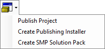
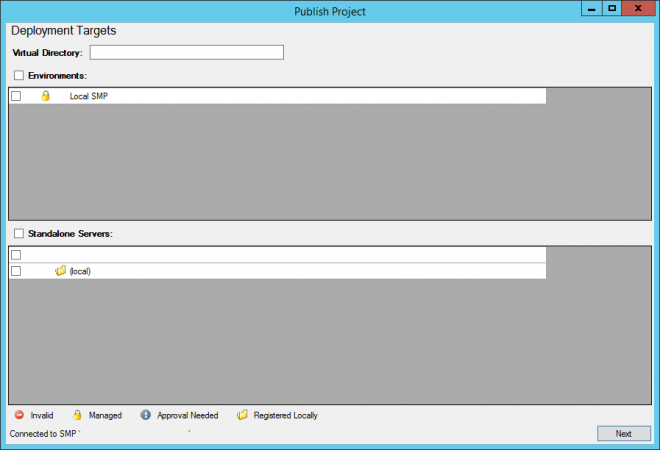
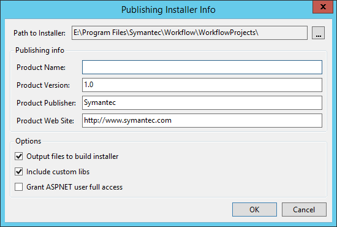
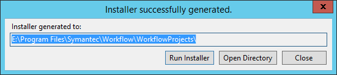
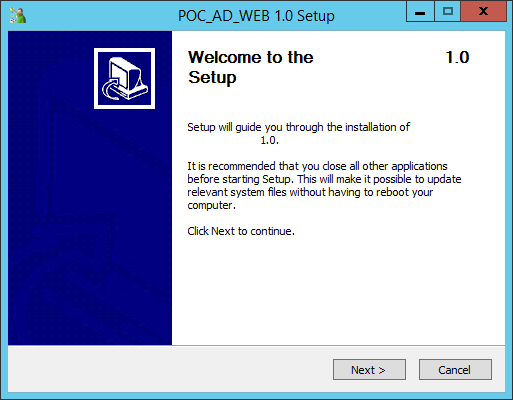
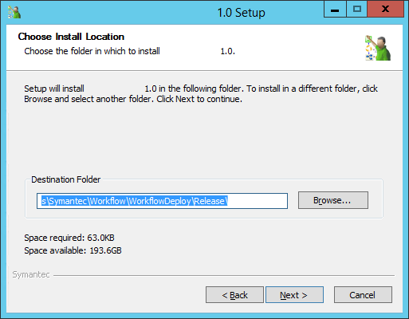
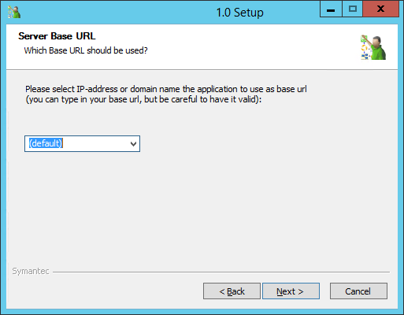
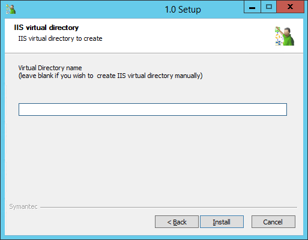
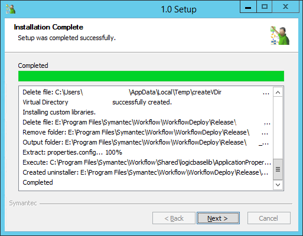
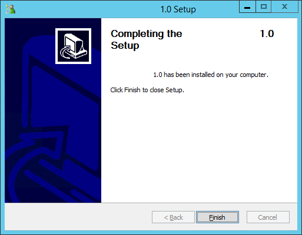

In this Article I'm going to show you how to Publish a project in  Workflow.
Workflow.
There are a number of options you can use
- Publish Locally
- Publish to Managed
- Create Publishing Installer
- Create SMP Solution Pack

Publish Project

Create Publishing Installer








Create SMP Solution Pack
- To be added...
You may need to override settings to publish locally:
Server Extensions - IsManaged
Links
Publishing a Workflow Project (Part 1) Video
https://www.symantec.com/connect/videos/publishing-workflow-project-part-1-video
Publishing a Workflow Project (Part 2) Video
https://www.symantec.com/connect/videos/publishing-workflow-project-part-2-video
Publishing a Workflow Project (Part 3) Video
https://www.symantec.com/connect/videos/publishing-workflow-project-part-3-video
Publishing a Workflow Project (Part 4) Video
https://www.symantec.com/connect/videos/publishing-workflow-project-part-4-video
Vishaka Kulkarni (Symantec Employee)
https://www.symantec.com/connect/user/vishaka-kulkarni
Issues
Workflow SMP Environment Publishing Error After Workflow Upgrade to 8.1 Ru5
TECH251590
https://support.symantec.com/us/en/article.tech251590.html